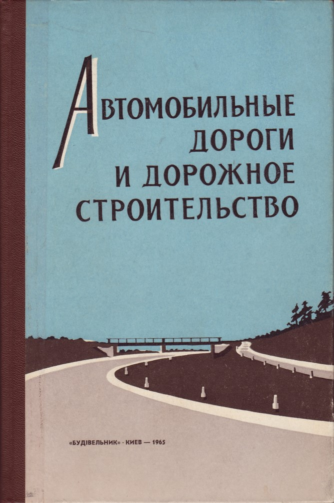
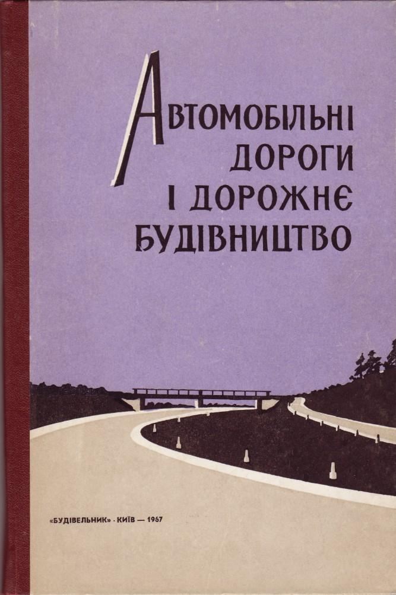
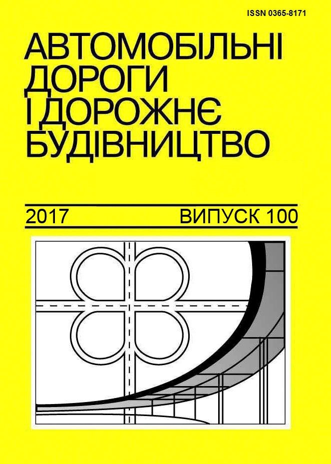
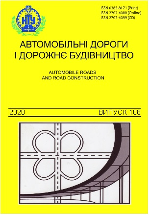

HISTORICAL NOTES
Scientific and Technical Journal "AUTOMOBILE ROADS AND ROAD CONSTRUCTION"
"Automobile Roads and Road Construction" - a professional scientific and technical journal of the National Transport University. Certificate of state registration: КВ № 9784 dated 21.04.2005.
In 1964 the Kyiv Automobile and Road Institute (from 2000 - National Transport University) established an Interagency Republican Scientific Journal "Automobile Roads and Road Construction". It immediately became an eloquent source of advanced road science, highlighting the scientific thoughts and developments of both leading figures and young researchers and also representatives of the road sector.
From the third issue (1967) to the eightieth (2011) the journal was published in Ukrainian. Today, articles in the journal can be printed in one of three languages - Ukrainian, Russian, English. For 56 years 108 issues have been issued.

The title of the journal "Automobile Roads and
Road Construction", Issue I, filed in a set
October 3, 1964.
Publishment "Budivelnik"

The title of the journal "Automobile Roads and
Road Construction", Issue III,
1967.
Publishment "Budivelnik"

The title of the journal "Automobile Roads and
Road Construction", Issue 100,
signed for publication in April 3, 2017.
Editorial and Publishing Department of NTU

The title of the journal "Automobile Roads and
Road Construction", Issue 108,
signed for publication in February 28, 2020.
Editorial and Publishing Department of NTU
The first editorial board of the Interagency Republican Scientific Journal "Automobile Roads and Road Construction" was headed by D. A. Rudenko - Chief Editor, V. D. Zinchenko - Deputy Editor-in-Chief, Ye. Ya. Derіаbin - Executive Secretary. The editorial board included well-known scientists: F. V. Bersheda, O. K. Birulia, M. I. Volkov, H. M. Zub, Ya. D. Livshyts, H. A. Lilitskyi, M. V. Ornatskyi, K. S. Terenetskyi, K. A. Khavkin, Ya. V. Khom’iak, H. I. Shulha.
At various time, in the editorial board of Scientific and Technical Journal worked and published famous scientists: M. F. Dovhal, V. Y. Zavorytskyi, V. O. Zolotarov, V. S. Yehorov, Ya. A. Kaluzkyi, V. M. Sidenko, H. K. Siunіi, Ye. N. Khom’iakov, B. S. Radovskyi, O. O. Rasskazov, S. H. Mikhovych and others.
Among the authors of Scientific and Technical Journal are well-known scientists and representatives of the road sector: O. T. Batrakov, M. P. Varvak, E. V. Havrylov, I. M. Hrushko, T. R. Davydiants, E. A. Kazarnovskyi, V. I. Kuzmin, O. I. Leushyn, Ya. D. Livshyts, A. Ye. Merzlikin, V. V. Silianov, V. P. Starovoida, L. M. Tymofiieva, O. Ya. Tulaiev, Ya. V. Khom’iak, V. V. Filipov, V. R. Yaromko and others.
During the period of edition, the editorial board of Scientific and Technical Journal was headed by four major editors: D. A. Rudenko, Ya. V. Khom’iak, V. Y. Zavorytskyi, V. Ya. Savenko.
Dmytro Arystarkhovych Rudenko – Laureate of the State Reward of the USSR, professor, founder and first Head of the Department of Organization and Mechanization of Road Construction of the Kyiv Automobile and Road Institute, the first Chief Editor of the Scientific and Technical Journal "Automobile Roads and Road Construction" , issues 1-3 (1965-1966)
Yaroslav Vasylovych Khom’iak – Doctor of Technical Sciences, Professor, Vice-Rector of the Kyiv Automobile and Road Institute for Scientific Research, Head of the Department of Road Design, the first Head of the Department of Ukrainian Studies. Chief Editor of the Scientific and Technical Journal "Automobile Roads and Road Construction", issues 4-50 (1967-1992)
Volodymyr Yosypovych Zavorytskyi – Doctor of Technical Sciences, Professor, Dean of the Faculty of Road Construction, Head of the Department of Construction and Road Maintenance, Full Member of the Academy of Sciences of the Higher School of Ukraine and the Transport Academy of Ukraine. Chief Editor of the Scientific and Technical Journal "Automobile Roads and Road Construction" , issues 51-53 (1993-1996)
Viacheslav Yakovych Savenko – Honored Worker of Science and Technology of Ukraine; Doctor of Technical Sciences; professor; former Dean of the Road Construction Faculty; Head of the Department of Transport Construction and Property Management (former Department of Construction and Road Maintenance); a full Member of three Academies and an Honorary Professor of several higher educational institutions, including abroad. He was awarded the marks "For scientific achievements", "Excellence in Education of Ukraine" and "Honorable Road-builder of Ukraine". Chief Editor of the Scientific and Technical Journal "Automobile Roads and Road Construction" from 1997 to present, issues from 54 up to the present
From 1993 to present, more than 58 issues (51-108) Petrovych Volodymyr Vasylovych works as the responsible secretary of the editorial board. He is candidate of technical sciences, professor, senior researcher, full Member of the Transport Academy of Ukraine, Corresponding Member of the Academy of Construction of Ukraine, Professor of the Department of Transport Construction and Property Management of the National Transport University. Awarded the mark "Honorable Road-builder of Ukraine".
The Scientific and Technical Journal "Automobile Roads and Road Construction" in 1979 was assigned the Index ISSN 0365-8171 - the International Standard Serial Number .
The Scientific and Technical Journal "Automobile Roads and Road Construction" highlighted the results of theoretical and experimental research in the following headings: exploration, road design and design of transitions through watercourses; road building materials and products; construction and maintenance of roads and airfields; technical expertise and property valuation; organization and economy of construction production; transport structures; road and construction machinery; transport technologies; road conditions and traffic safety; ecology and environment protection, etc.
From 2017 (issue 101) International Council was established.
From 2018 (issue 103) the Scientific and Technical Journal comes out in a new format that meets international standards.
The Scientific and Technical Journal "Automobile Roads and Road Construction" is published according to the decision of the Academic council of the National transport university. Printed copies are distributed among: state and leading libraries of Ukraine, leading educational, scientific, research and design institutions of road transport; enterprises for the construction, reconstruction, repair and maintenance of highways and airfields; institutions in which must send the publications with published main results of the dissertation work (the order of the Ministry of Education and Science of Ukraine dated July 11, 2016 No. 820 is included in the List of scientific professional editions of Ukraine).
The electronic copy of the Scientific and Technical Journal "Automobile Roads and Road Construction" is located on the site of the National Library of Ukraine named after V.I. Vernadsky of the National Academy of Sciences of Ukraine in the section "Scientific periodicals of Ukraine" (for periodical printed scientific professional editions), on the site of the National Transport University and the site of the Scientific and Technical Journal "Automobile Roads and Road Construction".